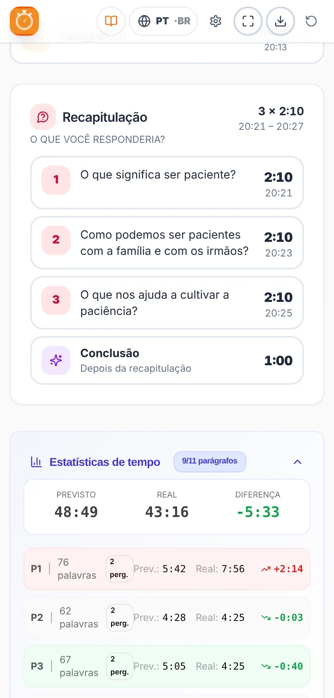

Manual de uso
Cronômetro do Estudo
Como preparar e dirigir o Estudo de A Sentinela no tempo certo
Como preparar e dirigir o Estudo de A Sentinela no tempo certo
Quer começar já? Veja o guia rápido em 7 passos.
O Cronômetro do Estudo ajuda o irmão que dirige o Estudo de A Sentinela a distribuir bem o tempo e terminar no horário.
Você carrega o artigo da semana em PDF e o aplicativo:
Aplicativo não oficial. É um projeto gratuito e independente. Não é uma publicação oficial nem tem relação com o jw.org ou com a organização das Testemunhas de Jeová. O artigo é analisado no seu próprio aparelho: não é enviado nem guardado em nenhum servidor.
As imagens deste manual usam um artigo de exemplo inventado, não um artigo real de A Sentinela.
Instale pelo Google Play: procure “Temporizador de Estudio” ou abra este link:
play.google.com/store/apps/details?id=com.comangelo.temporizadorestudio
Ainda não está na App Store, mas funciona do mesmo jeito pela web e pode ser colocado na tela de início:
Abra temporizador-estudio.vercel.app no navegador. No Chrome e no Edge, você pode instalá-lo como aplicativo pelo ícone de instalar na barra de endereços.
Atualizações: quando há uma nova versão, o aplicativo mostra o aviso “Há uma nova versão do aplicativo disponível.” com o botão Atualizar. Ele nunca se atualiza sozinho no meio de um estudo.

De cima para baixo, você vai encontrar:
O cartão “Artigo desta semana” mostra a semana atual (por exemplo, 9-15 de novembro de 2026) e a edição de A Sentinela que a contém. Com as setas ‹ › você pode escolher outra semana.
A Sentinela é baixada no idioma do aplicativo. Se o aplicativo está em português, é baixada a edição em português; se está em inglês, a edição em inglês, e assim por diante em todos os idiomas. Para baixar outro idioma, mude primeiro o idioma do aplicativo (seção 14). Em português, é baixada a edição de Portugal ou a do Brasil, conforme a sua escolha.
O aplicativo guarda uma cópia da revista. As semanas seguintes da mesma edição abrem direto com “Abrir o artigo desta semana”, sem baixar nada de novo. As revistas guardadas são apagadas sozinhas 3 meses depois da sua última semana.
No computador, você também pode arrastar o PDF para qualquer parte da tela inicial (aparece o aviso “Solte aqui o PDF de A Sentinela”) ou escolher a pasta onde guarda as revistas, e o aplicativo vai encontrá-las sozinho.
Diz que a revista ainda não foi publicada? O jw.org publica cada edição algumas semanas antes. Se você escolher uma semana muito distante, talvez ela ainda não esteja disponível.


Ao carregar o artigo, você vai ver:
No cartão do plano, o aviso “Comentários: X s por pergunta” diz quanto tempo há em média para responder cada pergunta.
Se o artigo for longo demais para o tempo escolhido, aparece o aviso “Não cabe” com o que falta. Você pode aumentar a duração ou escolher uma leitura mais rápida nas Configurações.

Cada parágrafo ocupa uma linha com o seu número, o seu tempo previsto e a hora aproximada em que deve terminar. As etiquetas coloridas indicam o que é preciso levar em conta:
| Etiqueta | O que significa |
|---|---|
| Tiago 5:7, 8 | Há um texto bíblico para ler. Aparece a citação exata. |
| Imagem | A pergunta menciona uma imagem do artigo (“Veja também a imagem”). |
| Nota | Há uma nota de rodapé para comentar. |
| ★ Ponto principal | A pergunta menciona um quadro ou uma ideia destacada entre aspas. |
Toque num parágrafo para abri-lo. Você vai ver as palavras, o tempo de leitura, a pergunta e, se for longo, o tempo extra para mais comentários. A partir daí:
Os parágrafos que têm a mesma pergunta (por exemplo, “5, 6.”) são tratados como um grupo, e o botão Próximo pula o grupo inteiro.
Recomendado: durante o estudo, abra o modo apresentação (seção 9). Aqui se explica o funcionamento geral, que é o mesmo nas duas telas.
No celular, os botões principais ficam sempre embaixo, na barra inferior:


No cartão do plano, em cima, você pode pausar e continuar o estudo. O aviso “Deve terminar em m:ss” lembra quanto falta para a hora de término.
A tela não se apaga enquanto o estudo está em andamento, para você não precisar tocar no celular. No final, o celular volta a apagar a tela como de costume.
O cartão da parte em andamento (parágrafo, introdução, pergunta de recapitulação ou conclusão) muda de cor conforme o tempo usado:
| Cor | Quando | O que fazer |
|---|---|---|
| NO TEMPO | Até o tempo previsto. | Tudo bem: continue assim. |
| TOLERÂNCIA | Passou do tempo, mas não mais que 30%. | Vá encerrando os comentários. |
| EXCEDIDO | Mais de 30% acima do previsto. | Passe para o próximo parágrafo. |


Nos últimos 5 minutos do estudo, os parágrafos e as perguntas de recapitulação não têm tolerância: passam direto do verde para o vermelho, para não tirar tempo do final. A conclusão sempre mantém a sua tolerância.
Se uma parte demorar mais, não tem problema: ao tocar em Próximo, o aplicativo volta a distribuir o tempo que sobra entre o que falta, para terminar no horário.
É a forma recomendada de dirigir o estudo. O modo apresentação evita distrações: mostra só o que você precisa, as cores verde, amarelo e vermelho mostram num relance em que ponto você está e como está o tempo, e os botões Próximo e Comentário são grandes e fáceis de encontrar e tocar.
Pensado para deixar o celular ou o tablet na tribuna: tudo grande e fácil de ver num relance. Abre com o botão ⛶ da barra inferior e fecha com o ✕ (ou a tecla Esc no computador). No celular, ele também fecha com o botão “voltar”, sem sair do aplicativo.
Em cima, mostra a hora atual, a hora em que termina e o tempo restante, com uma barra de progresso. No centro, a parte em andamento com o seu cronômetro e a sua cor, e as etiquetas (por exemplo, Ler Tiago 5:7, 8). Embaixo, os botões Comentário e Próximo.
Há três layouts. Para trocar, use o botão de layout ▦ (em cima, à direita) ou Configurações → Tela:


No modo apresentação, o botão grande avança sozinho pelo estudo: Iniciar estudo → Ir para o parágrafo 1 → Próximo parágrafo → Pergunta de recapitulação → Ir para a conclusão → Encerrar estudo. Nos últimos 5 minutos, aparece o aviso de que é hora de terminar.
Exemplo (o artigo das imagens): num estudo de 60 minutos com 11 parágrafos e 21 perguntas (18 dos parágrafos e 3 de recapitulação), com o tempo por resposta em 35 segundos, cerca de 7 minutos são de leitura, 2 minutos de introdução e conclusão e cerca de 51 minutos de comentários, o que dá um pouco mais de 2 minutos por pergunta.
Toque em ⚙, em cima, à direita. As configurações ficam salvas no seu aparelho e estão organizadas em quatro abas:


| Aba | O que você pode mudar |
|---|---|
| Tempo | Duração do estudo (até 60 min). Duração da introdução e da conclusão (de 30 s a 3 min). Visita do superintendente de circuito. |
| Leitura | Velocidade de leitura do leitor: Lenta (150), Normal (180) ou Rápida (210 palavras/min). Tempo por resposta (de 30 a 90 s; vale também para cada texto, imagem, nota ou ponto principal). Parágrafos longos ou agrupados: Sem extra, Normal ou Mais comentários. |
| Avisos | Som e vibração (com botões para testar). Aviso de parágrafo excedido, aviso “Faltam 5 minutos” e até dois avisos antes da recapitulação. |
| Tela | Idioma, tema claro ou escuro (com quatro variações de escuro) e o layout do modo apresentação. |
Se você mudar a velocidade de leitura ou o tempo por resposta com o estudo em andamento, a mudança vale para o próximo estudo.
Verifique se o celular não está no silencioso se quiser ouvir os avisos. A vibração funciona no Android; no iPhone, depende do navegador.

Na semana da visita, ative o botão “Visita do superintendente de circuito” na tela inicial (ou em Configurações → Tempo). O estudo passa a durar 30 minutos e os parágrafos não são lidos: continuam as perguntas, os textos bíblicos, as imagens e a recapitulação. Lembre-se de desativá-lo depois da visita.

O aplicativo funciona em espanhol, inglês, alemão, italiano, francês, português, polonês, holandês e romeno. Mude o idioma com o botão do globo, em cima, ou em Configurações → Tela. Ao mudar o idioma:
Este manual também está disponível em todos esses idiomas: use os botões de idioma no alto da página.

As Estatísticas de tempo comparam o tempo previsto com o real no estudo todo e em cada parágrafo, com a diferença em verde (mais rápido) ou vermelho (mais lento) e os comentários marcados. Elas ajudam a ver que partes demoraram mais e a ajustar da próxima vez (por exemplo, a velocidade de leitura).
Com o botão exportar ⬇ da barra superior, você pode salvar o plano do estudo como imagem (PNG) ou como PDF, para imprimir ou compartilhar.
Para preparar outro estudo, use o botão começar de novo ↻.